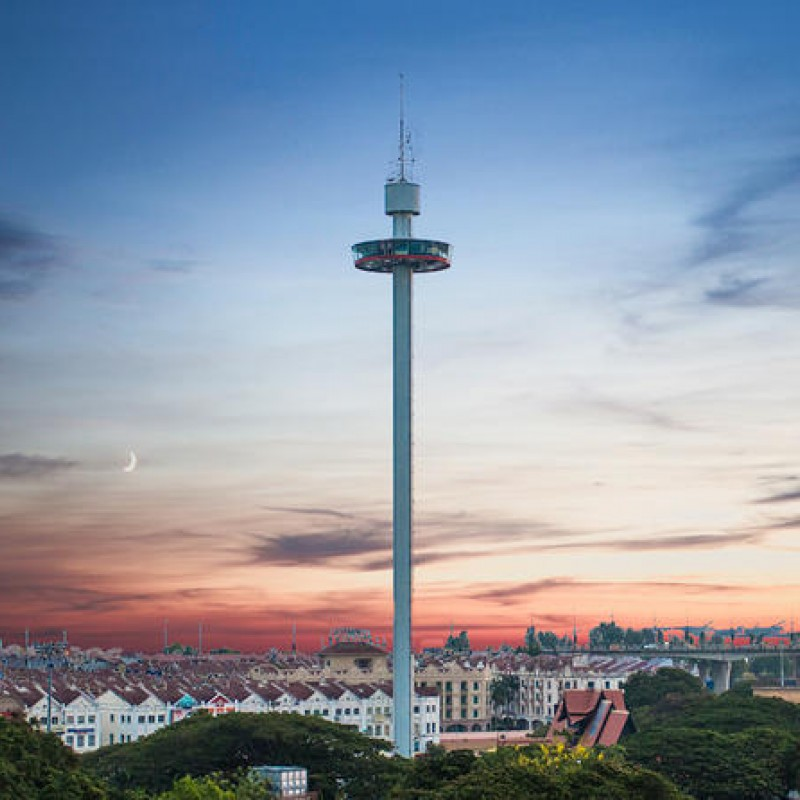
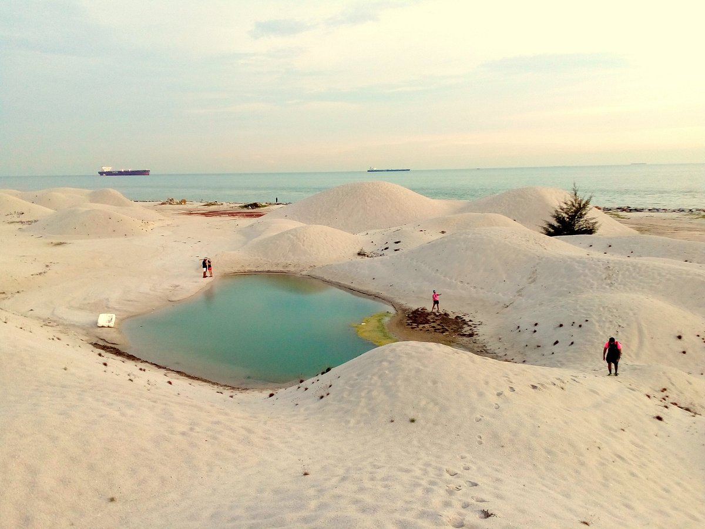
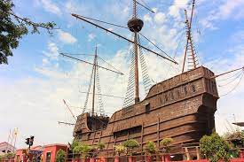
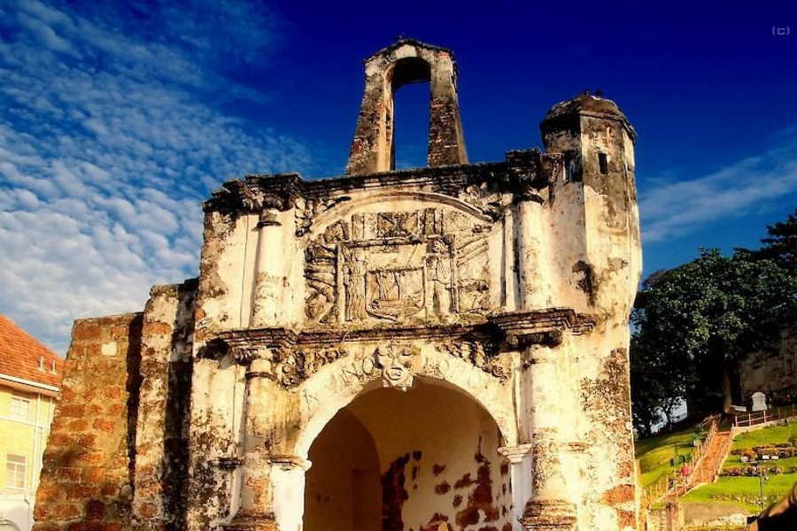
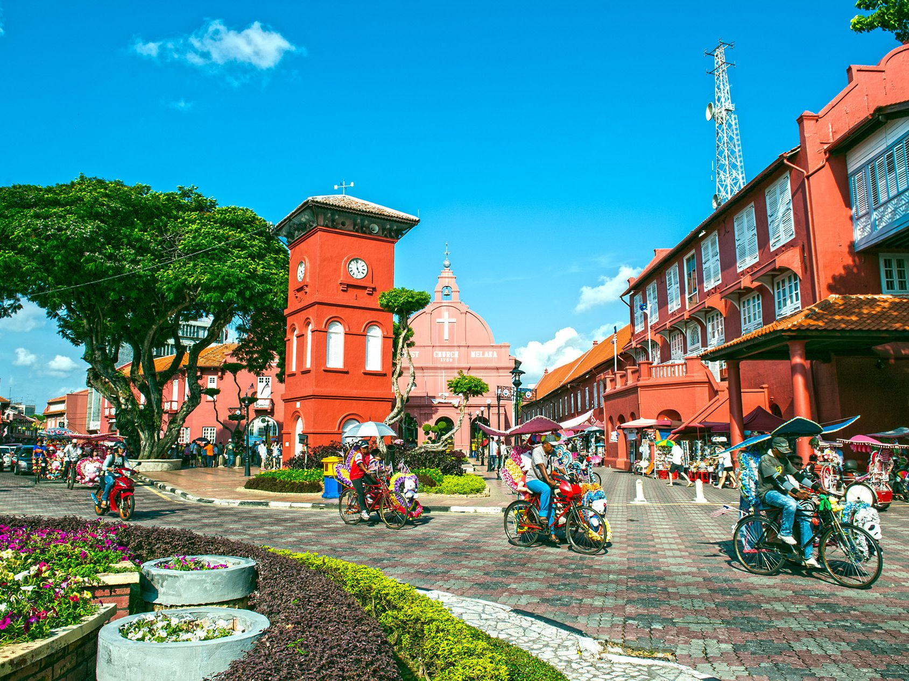
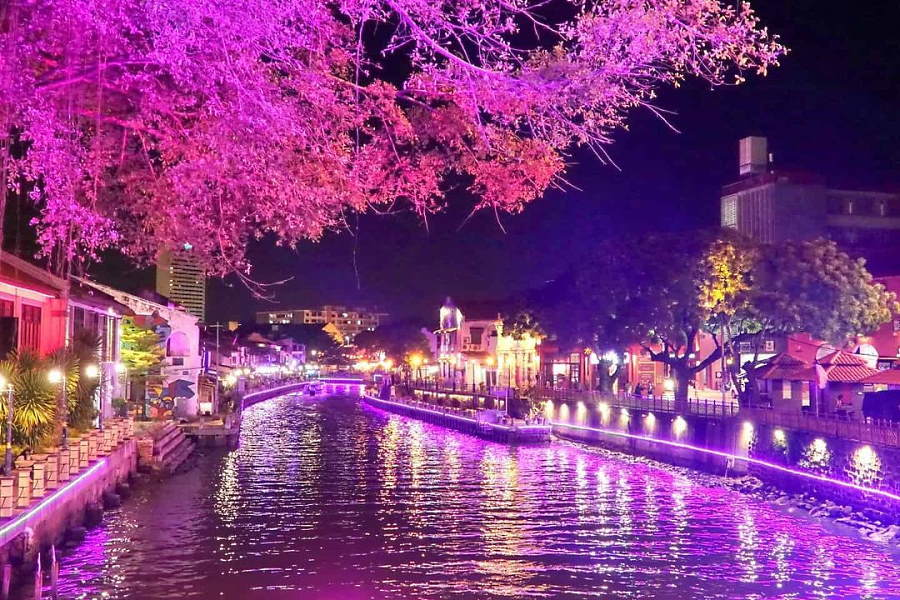
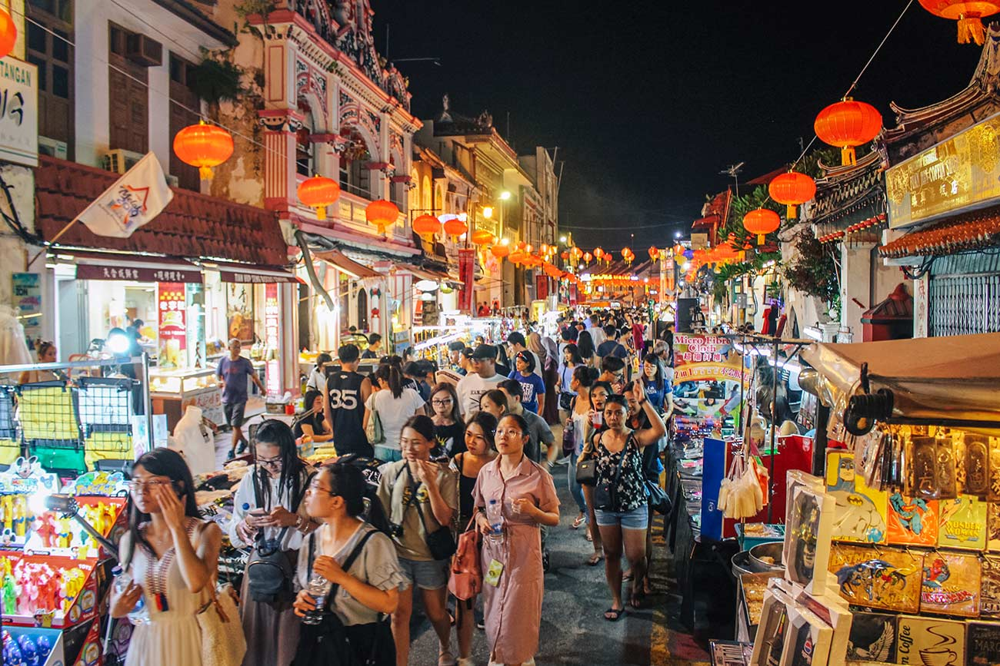
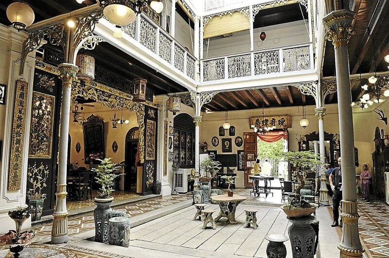

Enjoy Your Days in Melaka !

Taming Sari Tower
From a height of 80 meters and a view of 5km, visitors can see many interesting and historical places such as the Straits of Melaka, RMAF Complex, Stadthuys, The Peak of St. Paul, Independence Memorial, Melaka Island and State Mosque. The journey time is 7 minutes and the passenger capacity is 80 people.
Its height is 110 meters.
Operation Time:
Everyday, from 10 a.m to 11 p.m
Entree Fees:
Adult ( Local Citizens) - RM 17.00
Children(Local Citizens) - RM 11.00
Adult (Foreign Visitors) - RM 23.00
Children (Foreign Visitors) - RM 15.00

Klebang Beach
Pantai Klebang is a popular beach in Melaka, located near 1 Malaysian Square. The beach is
well known for its white sand dunes and is a perfect backdrop for photographs.
The Klebang Beach is a great place for fun-filled family activities such as horse riding,
flying kites and enjoying the beautiful beach. The beach also has a playground for children and there are several food trucks beside the playground which serve delicious snacks. It is particularly
famous for its coconut shakes and food trucks.
The best time to visit Pantai Klebang is during the evening hours,
as visitors can spend time at the beach with a pleasant climate
while watching the spectacular sunset.

Melaka Maritime Museum-Flor De La Mar Malacca
The Melaka Maritime Museum showcases the maritime history of Malacca through its three different sections.
The highlight of the three is a replica of the Portuguese ship - Flor de la Mar - that sank in Malacca due to an
unfortunate accident.
The Maritime Museum in Melaka focuses on the maritime history of Malacca and Malacca’s Sultanate as the Emporium of the East.
The museum is a must-see for its Flor de la Lamar replica and its unique way of showcasing the history of Melaka.
Time to visit:
Monday - Friday: 9:00 AM - 5:30 PM
Saturday - Sunday: 9:00 AM - 9:00 PM
Entree Fee: Free

A' Famosa Fort
A former Portuguese Fortress, A Famosa is among the oldest surviving European
architectural remains in Southeast Asia. One of Malacca's famous sightseeing spots, the only remaining part of the fortress is a small gate house, known as Porta de Santiago.
A Famosa ruins is a wonderful spot for photography lovers, who can capture some stunning images of this
crumbling structure. History lovers would be interested to note that A'Famosa was once home to an entire
lot of the Portuguese administrative officials.

The Stadthuys
The Stadthuys (an old Dutch spelling, meaning city hall) is a historical structure situated in the heart of Malacca City,
the administrative capital of the state of Malacca, Malaysia in a place known as the Red Square. The Stadhuys is known for its red exterior and nearby red clocktower. It was built by the Dutch in 1650 as the office
of the Dutch Governor and Deputy Governor.
Situated at Laksamana Road, beside the Christ Church, the supposed oldest remaining Dutch historical building in the Orient, is now home to the History and Ethnography Museum.
Among the displays in the museum are traditional costumes and artifacts throughout the history of Malacca,
which makes it Malacca's premier museum.

Melaka River Cruise
The Melaka River Cruise is a great way to see the sights
of Melaka at a leisurely pace, in comfort and without breaking the bank.
Begin your cruise from any jetty:
1.Taman Rempah Jetty
2.Muara Jetty
3.The Shore Jetty
Ticket Price as of January 2022:
-> MyKad holders pay RM 25 for adults and RM 15 for children aged 2 to 12.
-> Foreigners have to pay a little more, RM 30 for adults and RM 25 for kids.
-> Free for children under 2.

Jonker Walk
The Jonker Walk is the Chinatown area in Malacca City in the state of Malacca, Malaysia located along Jonker Street. It starts from across Malacca River near the Stadthuys,
with the street in the area filled with historical houses along its left and right sides dating back to 17th century,
many of which are shops selling antiques, textiles, foods, handicrafts and souvenirs such as keychains and shirts.
The area turns into a night market every Friday, Saturday and Sunday in the evening from 6 p.m. until 12 midnight,
with its street blocked for traffic.

The Baba Nyonya Heritage Museum
At Baba & Nyonya Heritage Museum in Melaka you can tour the gorgeous ancestral
home of a wealthy Peranakan family and learn about the unique hybrid culture of the Straits-born Chinese.
This wonderful townhouse was home to Chan Cheng Siew (1865-1919) and subsequent generations of his family.
Chan was a successful planter, property investor and businessman.
Opening daily from 10 am to 5 pm
Daily Tour Times:
- Hourly at 10 am, 11 am 12 noon, 2 pm, 3 pm and 4 pm
- Additional tour at 5 pm on Friday, Saturday and Sunday.
- If you are a group of more than 10 people you should book your tour
at least one month in advance to avoid disappointment.
Entrance Fees:
- Adult RM 16
- Child RM 11 (Ages 5-12)